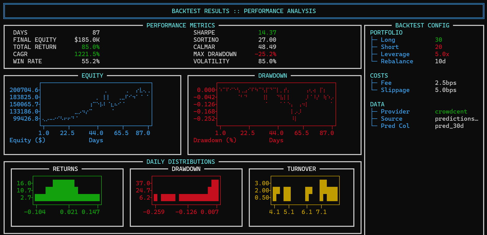
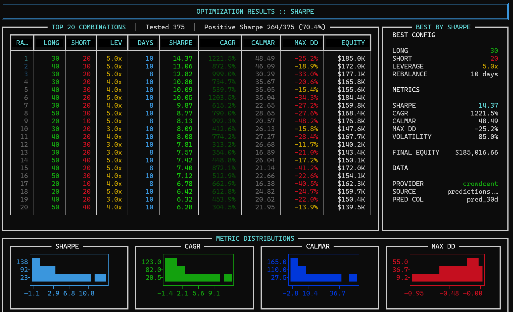

Backtesting & Optimization
Critical Disclaimer
Past performance does not guarantee future results. Backtesting results are hypothetical and have inherent limitations:
- Overfitting Risk: Parameters that perform well historically may fail in live trading
- Market Dynamics: Conditions, liquidity, and correlations change over time
- Execution Reality: Slippage, fees, and market impact may exceed modeled estimates
- Survivorship Bias: Historical data may exclude delisted/failed assets
- Data Mining: Testing multiple strategies increases the chance of finding spurious patterns
Always validate strategies with out-of-sample data, paper trading, and start with minimal capital when going live.
Test your strategies on historical data before risking real capital. cc-liquid provides powerful backtesting tools to analyze performance and optimize parameters.
Data Requirements
You need to bring your own datasets for backtesting. cc-liquid requires two data files:
- Historical price data (
raw_data.parquet) - Daily closing prices for all assets - Historical predictions (
predictions.parquet) - Your prediction scores/signals for each asset
See Data requirements section below for detailed format specifications.
Quick start
Basic backtest
Once you have prepared your data files, run a backtest with your current configuration:
# Ensure you have these files in your working directory:
# - raw_data.parquet (price history)
# - predictions.parquet (your signals)
cc-liquid analyze
This uses price data from raw_data.parquet (must exist), predictions from predictions.parquet or your configured data source, and portfolio settings from cc-liquid-config.yaml.
Parameter optimization
Find optimal portfolio parameters using grid search:
Analyze command
The analyze command runs a single backtest with specified parameters.
Basic usage
# Use config defaults
cc-liquid analyze
# Override specific parameters
cc-liquid analyze --set portfolio.num_long=15 --set portfolio.num_short=5 --set portfolio.target_leverage=2.0
# Custom date range
cc-liquid analyze --start-date 2024-01-01 --end-date 2024-06-30
# Switch prediction column and rebalancing parameters
cc-liquid analyze --set data.prediction_column=pred_10d --set portfolio.rebalancing.every_n_days=10
# Show position details and save daily results
cc-liquid analyze --show-positions --save-daily results.csv
Parameters
| Parameter | Default | Description |
|---|---|---|
--prices |
raw_data.parquet |
Path to historical price data |
--start-date |
Auto | Backtest start date (YYYY-MM-DD) |
--end-date |
Auto | Backtest end date (YYYY-MM-DD) |
--set |
None | Override config values (e.g., --set portfolio.num_long=15) |
--fee-bps |
4.0 | Trading fees in basis points |
--slippage-bps |
50.0 | Slippage costs in basis points |
--show-positions |
False | Show detailed position data |
--save-daily |
None | Save daily returns to CSV |
--verbose |
False | Show detailed progress |
Output metrics
The backtest displays comprehensive performance metrics including total return and CAGR, volatility and max drawdown, risk-adjusted metrics (Sharpe, Sortino, Calmar ratios), trading statistics (win rate, turnover), and final equity value.
Example output:

Optimize command
Optimization Warning
Parameter optimization is particularly susceptible to overfitting. The more parameters and combinations you test, the higher the risk of finding parameters that only work historically. Always reserve out-of-sample data for validation, test parameter stability across different periods, be skeptical of unrealistic returns, and consider transaction costs and market impact.
The optimize command runs parallel grid search to find optimal parameters.
Basic usage
# Requires raw_data.parquet and predictions.parquet to exist
# Default optimization
cc-liquid optimize
# Custom parameter ranges
cc-liquid optimize \
--num-longs "10,20,30" \
--num-shorts "0,5,10" \
--leverages "1.0,2.0,3.0" \
--rebalance-days "7,14,21" \
--rank-powers "0.0,0.5,1.0,1.5,2.0"
# Optimize for specific metric
cc-liquid optimize --metric calmar
# Apply drawdown constraint
cc-liquid optimize --max-drawdown 0.20 # Max 20% drawdown
# Run best parameters immediately
cc-liquid optimize --apply-best
Parameters
| Parameter | Default | Description |
|---|---|---|
--prices |
raw_data.parquet |
Path to historical price data |
--set |
None | Override config values (e.g., --set data.source=numerai) |
--num-longs |
"10,20,30,40,50" | Long positions to test |
--num-shorts |
"10,20,30,40,50" | Short positions to test |
--leverages |
"1.0,2.0,3.0,4.0,5.0" | Leverage levels to test |
--rebalance-days |
"8,10,12" | Rebalance frequencies to test |
--rank-powers |
"0.0,0.5,1.0,1.5,2.0" | Rank power values to test (0=equal weight) |
--metric |
sharpe | Optimization target: sharpe, cagr, calmar |
--max-drawdown |
None | Maximum drawdown constraint |
--top-n |
20 | Show top N results |
--apply-best |
False | Run full analysis with best params |
--save-results |
None | Save results to CSV |
--plot |
False | Show contour plots |
--max-workers |
Auto | Parallel workers (default: CPU count) |
--clear-cache |
False | Clear optimization cache |
--verbose |
False | Show detailed progress |
Optimization metrics
Choose your optimization target based on your goals: sharpe for best risk-adjusted returns (default), cagr for maximum absolute returns, or calmar for best returns relative to drawdown.
Position Weighting in Optimization
The optimizer tests different position weighting concentrations using --rank-powers. All optimizations use the rank_power scheme where:
0.0= equal weighting (all positions same size)0.5-1.0= mild concentration in top-ranked positions1.5-2.0= moderate concentration2.0+= heavy concentration
This replaces the need for a separate weighting_scheme parameter. See Portfolio Weighting for visual explanations of concentration effects.
Parallel execution
The optimizer uses multiprocessing to test parameter combinations in parallel. It automatically detects CPU cores (capped at 24), caches results to speed up repeated runs, and shows real-time progress with best parameters found.
Example output:

Caching
Results are cached in .cc_liquid_optimizer_cache.json to speed up repeated optimizations and preserve results across sessions. Clear with the --clear-cache flag when needed.
Applying best parameters
After optimization, apply the best parameters:
# Option 1: Run immediately
cc-liquid optimize --apply-best
# Option 2: Update config manually
# Copy best parameters from output to cc-liquid-config.yaml
Data requirements
Bring Your Own Data
cc-liquid does not provide historical data. You must source your own price history and prediction signals for backtesting.
Price data (raw_data.parquet)
Historical daily price data for all assets you want to trade. This file must contain:
| Column | Type | Description | Example |
|---|---|---|---|
date |
datetime | Price observation date | 2024-01-15 |
id |
string | Asset identifier (must match Hyperliquid symbols) | "BTC", "ETH", "SOL" |
close |
float | Closing price in USD | 42500.00 |
Example structure:
# DataFrame should look like:
# date id close
# 0 2024-01-01 BTC 42000.00
# 1 2024-01-01 ETH 2250.00
# 2 2024-01-01 SOL 95.50
# 3 2024-01-02 BTC 43500.00
# ...
Data requirements:
- Must cover the full backtest period for all assets
- Daily frequency (one price per asset per day)
- Asset IDs must exactly match Hyperliquid ticker symbols
- Prices should be in USD
- Can include more assets than you have predictions for (extras will be ignored)
Advanced usage
Custom data sources
Test with different prediction files or prediction timeframes:
# Test Numerai predictions
cc-liquid analyze --set data.source=numerai
# Test 10d predictions
cc-liquid analyze --set data.prediction_column=pred_10d
Cost analysis
Adjust trading costs:
Red flags
Watch for signs of overfitting:
- Sharpe ratio > 3 (too good to be true?)
- Performance degrades sharply outside optimum
- Large discrepancy between periods
- Performance doesn't generalize when adding prediction-lags
Disclaimer
Past performance does not guarantee future results. Backtests are simplified models that may not capture all market dynamics, execution challenges, or black swan events.